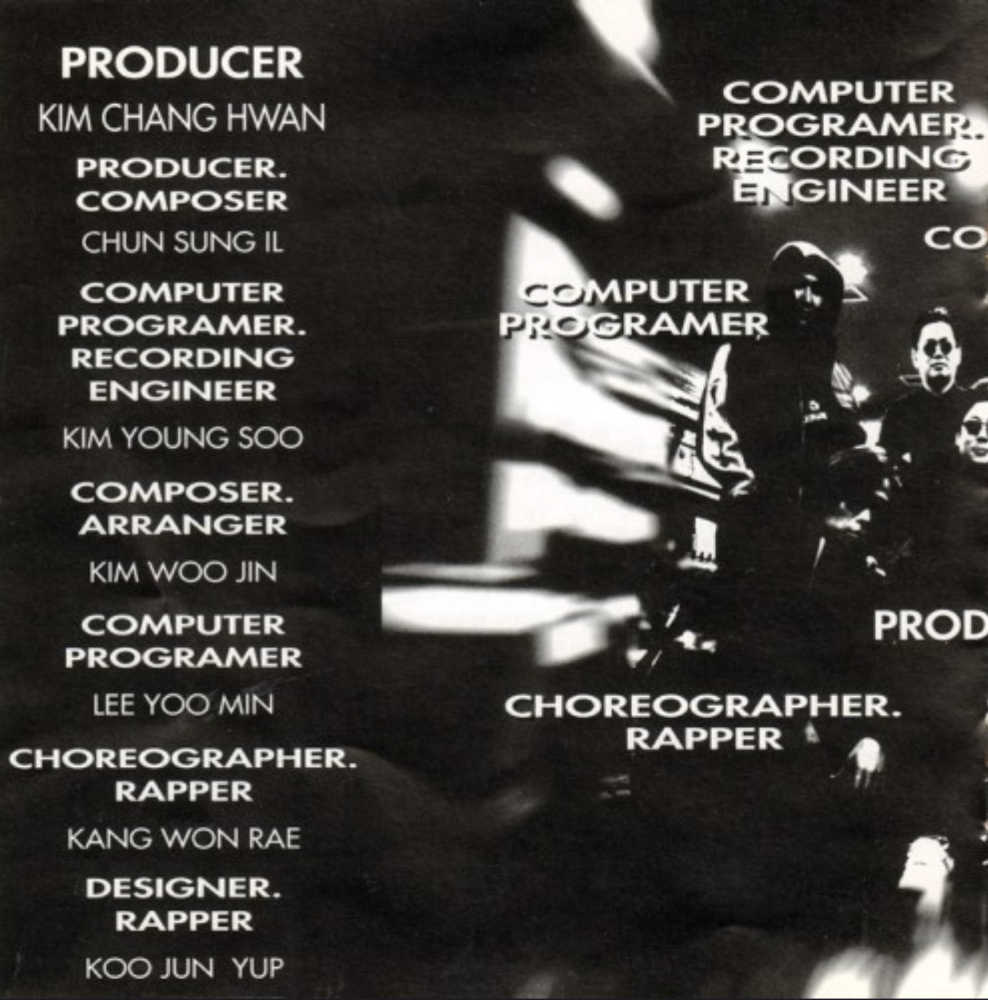
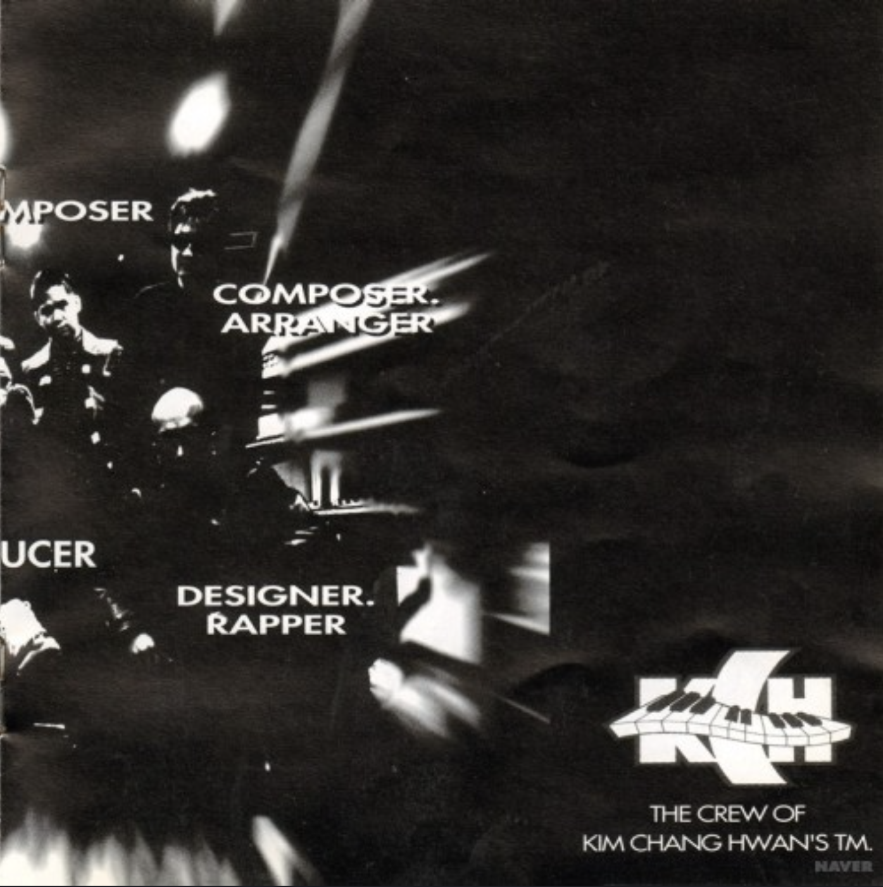
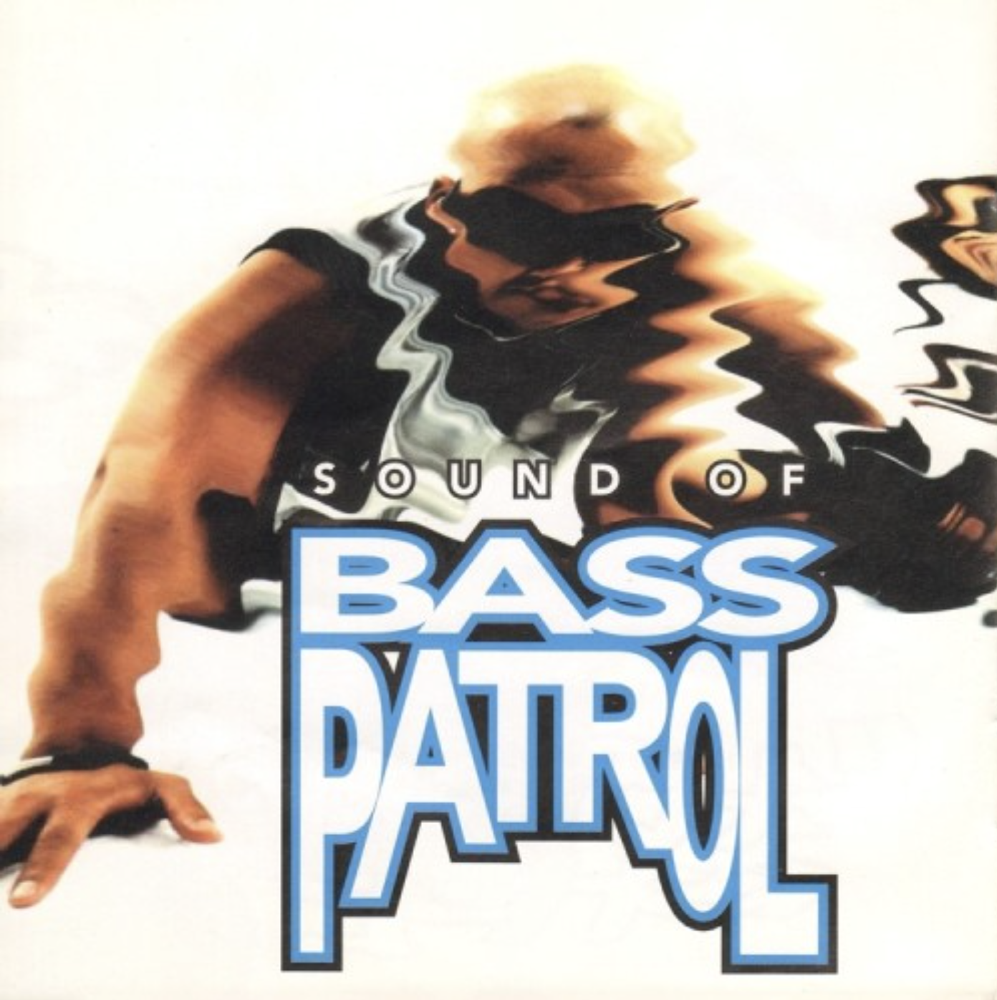
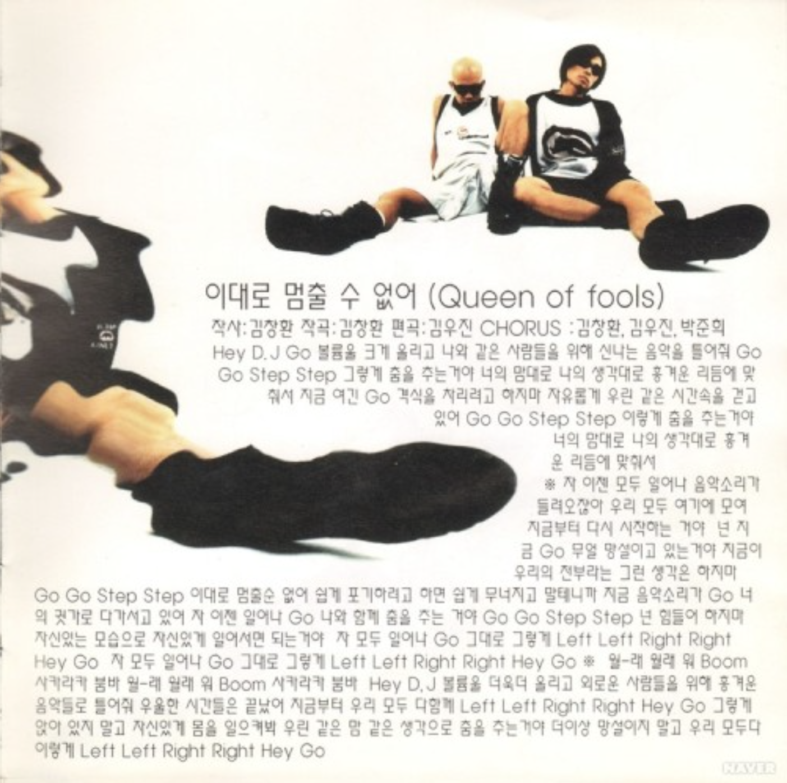
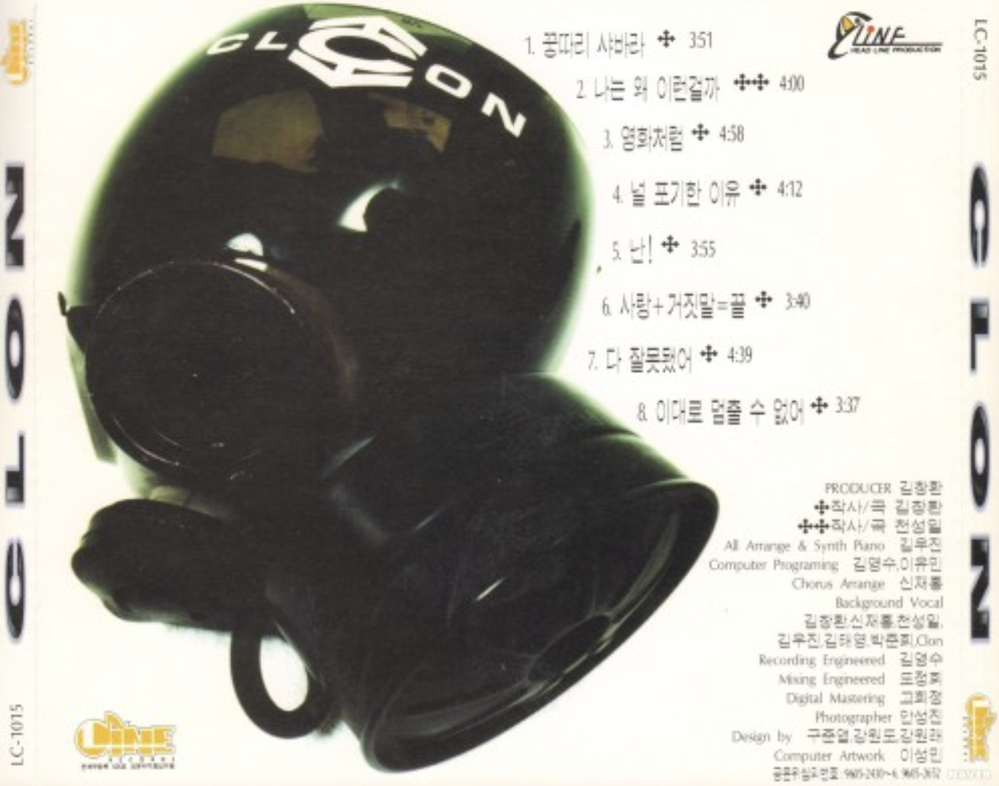

Are You Ready?
<1996>
가수 소개
1996년 데뷔한 클론은 <꿍따리 샤바라>로 대상을 휩쓸며 국내외에서 큰 사랑을 받은 댄스 듀오입니다. 이후 중화권 한류 1세대를 이끌고 4집 <초련>으로 다시 한번 정상에 올랐으나, 2000년 강원래의 불의의 사고로 안타깝게 활동을 중단했습니다. 한국 댄스 음악의 황금기를 상징하는 클론은 여전히 대중의 기억 속에 뜨거운 아이콘으로 남아 있습니다.
앨범소개
타이틀곡 <꿍따리 샤바라>는 가사 때문에 멤버들의 첫 반발을 사기도 했지만, 녹음 시작 2시간 만에 완성된 이후 밀리언셀러 기록과 연말 가요 대상을 휩쓰는 국민적 신드롬을 일으켰습니다. 훗날 이 노래는 '가수는 가사대로 산다'는 속설처럼 클론의 운명이 되었습니다. 2000년 예기치 못한 사고로 장애를 입게 된 강원래가 바로 이 곡의 희망적인 메시지를 통해 다시 일어설 힘을 얻었기 때문입니다.
🎵




